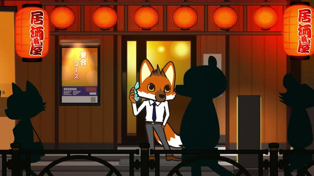
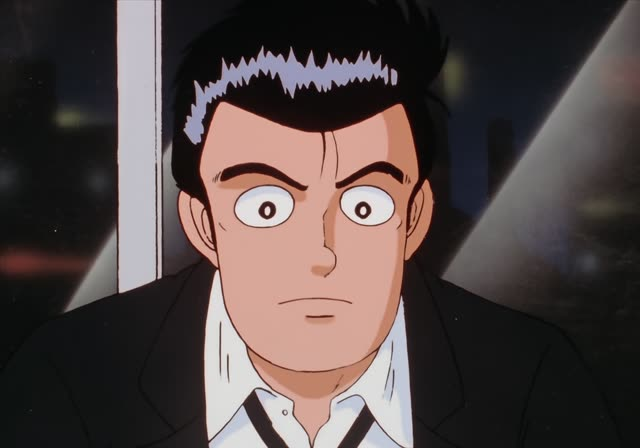
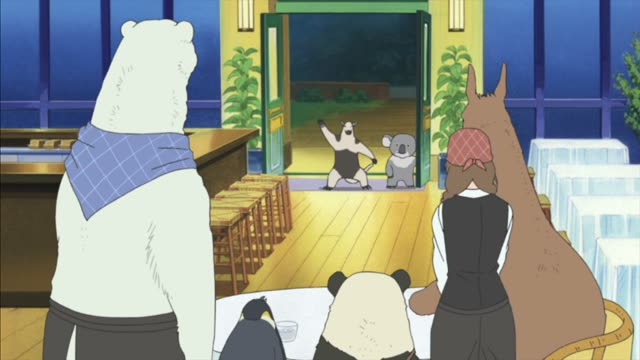
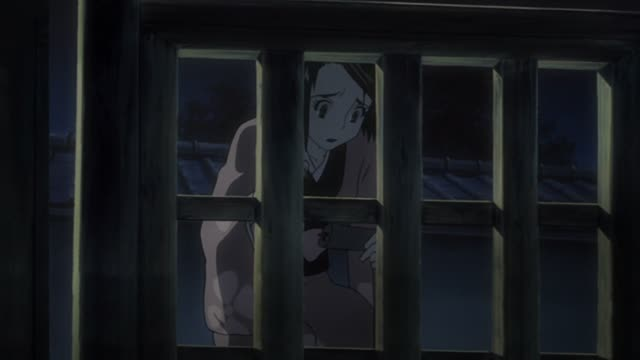
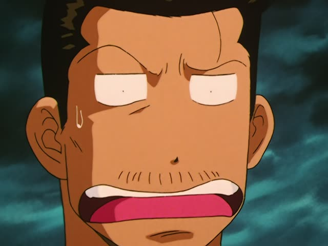
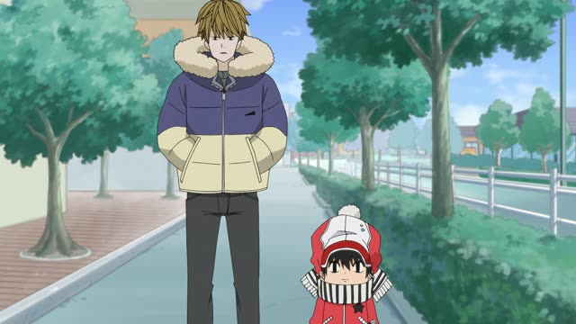
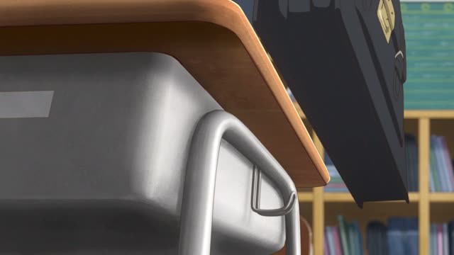

～てしまう・～ちゃう
| Polite | ～てしまいます・～ちゃいます |
|---|---|
| Casual | ～てしまう・～ちゃう ちゃう is the everyday spoken form |
Same meaning: "ended up doing it, it's done (and maybe oops)". Only the politeness changes. With で-verbs: でしまう・じゃう.

Aggretsuko · Season 1, Episode 7
もうみんな上で乾杯しちゃいましたよ。
"Everyone's already gone ahead and toasted upstairs."
～てしまう (spoken: ～ちゃう) says something is done and can't be undone. Often there's a feeling with it: oops, too bad, or "all of it". て-form + しまう: 行ってしまう → 行っちゃう.
On this card, Retsuko is late, and a coworker on the phone tells her the toast already happened without her. しちゃいました makes it polite.
In speech you'll mostly hear ちゃう / じゃう. ちまう is a rougher version.

Oishinbo · Episode 28
やれやれ、仕事が増えちゃったよ。
"Great, now I've got more work."
On this card, Yamaoka is handed one more job. 増えちゃった: it's happened, and he isn't happy about it.
Quick Examples
You open the fridge.
弟がケーキを全部食べちゃった！
"My brother ate all the cake!"
All of it, gone.
CasualApologizing to a coworker.
すみません、書類を忘れてしまいました。
"Sorry, I forgot the documents."
Oops: you didn't mean to.
PoliteYour friend is reading a novel.
もう読んじゃったの？
"You already finished it?"
で-verb: 読んでしまう → 読んじゃう.
CasualYour phone fell.
画面が割れてしまいました。
"The screen cracked."
PoliteWith and without
ケーキを食べた。
"I ate the cake." A fact.
ケーキを食べちゃった。
"I ate the cake (oops, all of it)." Done, and a little guilty.
Examples from Media
Midnight Diner: Tokyo Stories · Season 2, Episode 5
マメ出来ちゃいました。
"I got a blister."
First time holding a bat since high school.
1 Litre of Tears · Episode 8
毎日が変わってしまいました。
"Every day has changed."
Aya, about life with her illness.

Shirokuma Cafe · Episode 38
来ちゃいました。
"I came anyway."
A shy visitor at the door: here I am.

Samurai Champloo · Episode 1
折れちゃった。
"It broke."

Slam Dunk · Episode 92
みんな食っちまった。
"I ate it all."
ちまう = rough ちゃう. About money he spent.
Vinland Saga · Episode 2
片づけないと捨てちゃうよ！
"If you don't tidy up, I'll throw it all out!"

Kotaro Lives Alone · Episode 1
てっきり親子なのかと思っちゃった！
"I was sure you were father and son!"
思っちゃった: I (wrongly) thought.

Teasing Master Takagi-san · Season 2, Episode 1
や…やってしまった！
"Oh no... I did it!"
Nishikata realizes he fell for her trick.